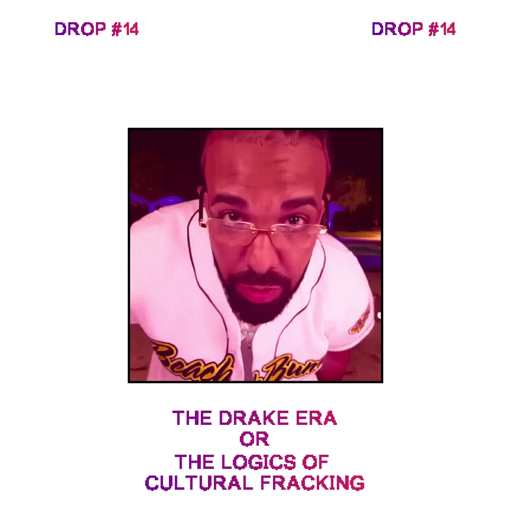
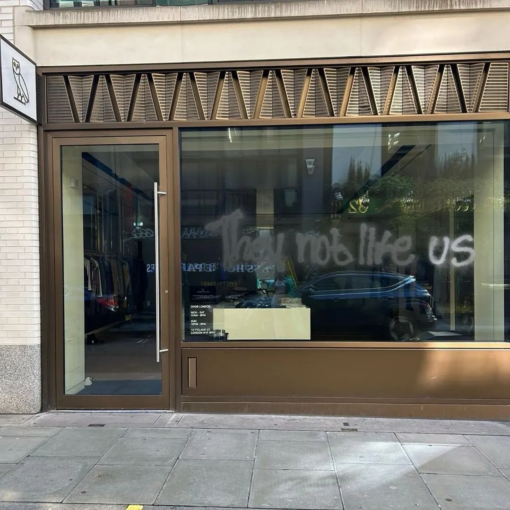
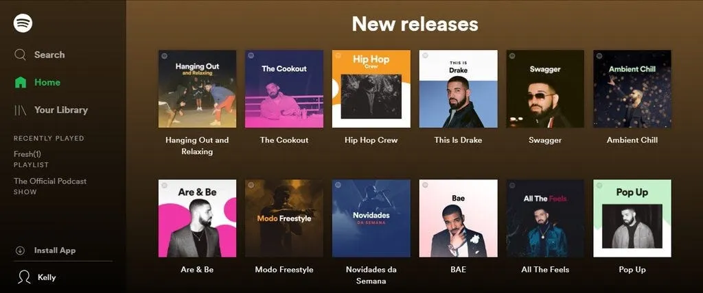
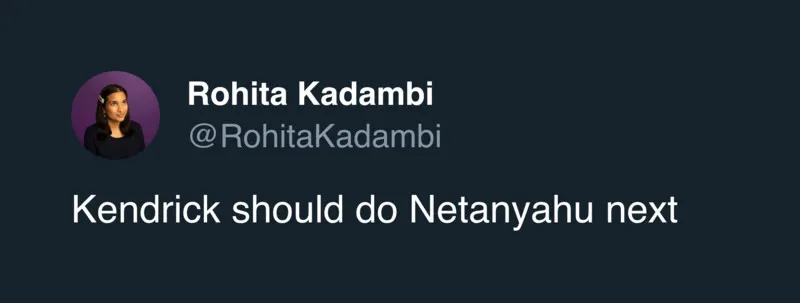
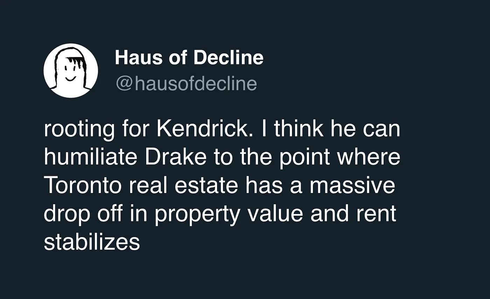
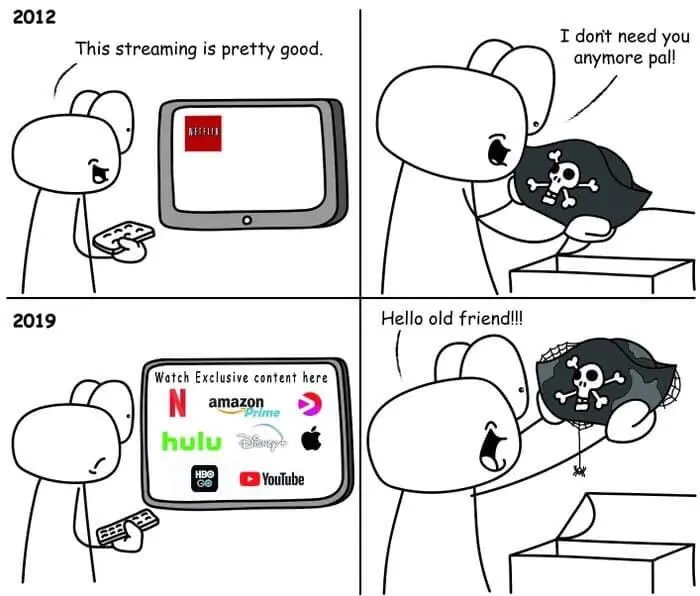

Drop #14 · May 16, 2024 · 18 min read
Hey everyone (▰˘◡˘▰)
Welcome back to Drops, REINCANTAMENTO’s newsletter. Apologies for the radio silence. Sometimes it’s hard to crumble time for writing and editing this publication.
But Drops is back today with some thoughts on the Kendrick Lamar - Drake beef and its wider implications for cultural production in our age. As a longtime hip-hop fan, I couldn’t help but write about the situation. I tried not to treat the beef solely as a distraction but rather as an opportunity to reflect on the past 15 years of pop music.
Will the end of the Drake era symbolize a shapeshifting moment in our understanding of creative production and distribution? Or are we condemned to an eternal repetition of boredom and infinite content? Will the emergence of AI-assisted tools allow for endless production of Drake(s)? The article is trying to answer these questions. Hope you’ll enjoy it.
Thanks to Matteo Gevi and Pekko Koskinen for the feedback.
If you want to propose an article for this newsletter send an email to reincantamento@gmail.com and consider donating or subscribing to support our work ^_^

Peggy, Peggy, I'm the new young Mayweather
I'm just trying to take hip-hop out the Drake era
JPEGMAFIA, Drake Era
In the past weeks, US hip-hop has offered more spectacle than in the past five years. And no, Kanye has (almost) nothing to do with this. The two biggest hip-hop artists of this generation, Kendrick Lamar and Drake go back and forth through four different tracks, stabbing at each other with sincere anger and resentment. This rap feud – which is ten years in the making – is the ultimate version of the concept: a clash against colossuses, filled with brutality and memorable lines, including gossip revelations, and sad and avoidable homophobic and sexist undertones, with women being the only real victims. This is hip-hop as a gladiator arena for better or for worse. Are you not entertained?
For those of you who find the idea of two 40-year-old millionaires insulting each other with rhymes neither attractive nor interesting, I won’t go into detail about the beef. However, I believe this dissing marks a symbolic moment in music and, more generally, in culture that can lead us to reflect on the developments of media distribution in the past decade. So, even if you despise both Kendrick and Drake, bear with me for a minute. No, we’re not getting into the allegations.
The beef was ignited by Kendrick Lamar’s feature verse on Future and Metro Boomin’s track “Like That”, released on the 26th of March, where he called out Drake alongside J. Cole, following the claims made by the due on last year's “First Person Shooter”. After Like That, more artists have joined the feud against the Canadian megastar: Rick Ross, A$AP Rocky, The Weekend, and more. On one hand, each one of them has both ongoing business and personal issues with Drake. On the other, the rapid burst of collective bitterness against the Canadian singer is unprecedented. Early in his career, Drake suffered from a similar hostility, being perceived as an alien figure in the hyper-clichéd body of hip-hop since the beginning of his career. For years, his credibility as a rapper was doubted and he was ridiculed for being too “soft” and emotional, for his light skin or his Canadian background. The narrative shifted after the success of “Take Care” and “Nothing Was The Same” but Drake’s street persona was accepted following his winning fight against Meek Mill in 2015 (I like Drake with the melodies / I don't like Drake when he acts tough remarked K-Dot on “Euphoria”). For some years - with the notable exception of Pusha T - nobody questioned Drake’s commercial dominion and immense influence over hip-hop. His indubitable hegemonic reign, the Drake Era, knew almost no rivalry, and the only competitors were J. Cole and, mostly, Kendrick Lamar, not considering Kanye, who’s clearly playing in his own league.

In terms of sales, however, nobody ever did it like Dreezy: he's the highest-certified digital singles artist ever in the United States, having moved 142 million units based on combined sales and on-demand stream. He’s the most streamed artist of the 2010s on Spotify. He holds Billboard Hot 100 records like the highest number of charted songs (329), most top 10 singles (77), and many more. While I don’t believe it is coherent to define music’s quality in terms of sales, Drake’s commercial impact and resonance are unprecedented and indisputable. As Drake himself once rapped: That’s why every song sounds like Drake featuring Drake. This was a funny brag until it became a problem. The sentiment has been boiling for some years. Drake’s music has long lost his fun and he started to appear as a too big too-big-to-fail behemoth in the industry. Drake became a synonym with the record industry itself: an aging icon of Universal Music Records. The ties are so tight that Lucian Grange, head of Universal, declared to HipHopDX: "If ever Drake or whenever Drake calls up and says he needs something for his project, I give it to him because he is the greatest”.
But who is Drake? At this point, Drake is likely a brand name, an avatar for a broader collective construction. Borrowing an analogy from Mat Dryhurst, Drake can be seen as a “Formula 1 driver.” Just as a Formula 1 team designs the optimal engine for a driver to achieve success on the track, a creative team crafts the perfect framework for a pop star to excel in the industry. This team conducts market research, analyzes data, curates the artist's social media presence and public image, and handles legal arrangements for collaborations, among other tasks. When an individual is presented as a brand, it allows for a more authentic and protagonistic narrative, akin to a hero's journey. This positioning can be beneficial for concealing the corporate operation behind the scenes. A person can evoke feelings of authenticity and strength, qualities that might be harder to attribute to a corporate entity. So, for simplicity, I will continue referring to Drake as an individual in this article, even though he represents the embodiment of shared intentions and collective agency.
After Kendrick arguably closed the beef with the fatal back-to-back of Meet the Grahams and Not Like Us, the Drake Era is crumbling. Fans and commentators in the mainstream, the territory that the Canadian reigned over for a decade, quickly turned against him. As Kendrick ignited a dry bush the entire forest took fire.
I believe, that the widespread unease with Drake that exploded during this rap feud is a symptom of a deeper phenomenon. The truth is that we don’t hate Drake but we hate the logic of cultural production in too-late capitalism, to borrow a term from Anna Kornbluh’s latest book, and that the Canadian is one of the purest incarnations of them.
Drake The Fracker
In 2018, in one of the first articles I’ve ever written, I discussed how Digital Streaming Platforms like Spotify offered the illusion of choosing and discovering music among millions of tracks while being used to push corporate interests and create even more cultural homogeneity. The example I chose to illustrate the point was the embarrassing promotion of Drake’s new album at the time - the very forgettable Scorpion. Drake’s portraits dominated every playlist’s cover on Spotify's homepage, crudely representing the power dynamics on digital platforms.

But even more thoroughly, Drake’s work became a template for the streaming era. Drake was the first mainstream artist to call a major release a “playlist” with his 2017 album More Life. Differently from an album, a playlist is a broader container that is heterogeneous by nature, and more than conveying a concept or a sentiment, it unfolds a series of moods. This is no coincidence: Drake adapted his craft to the dominant form of the streaming era. He understood that more than elaborated concept albums, you can give people containers of vibes - tropical, trap, sad boy, etc. – enriched with upcoming and trendy artist features. Drake diversified his portfolio, allowing listeners to pick a couple of tracks they liked from every release, and just ignore the rest. From More Life onwards, this has been the formula that the Canadians adopted for every major release.
With one golden rule: the longer it is, the better, so it will make people stream more; after 2016, Drake’s average solo album length is 74 minutes. A lengthy album not only generates more streaming revenue but also increases the likelihood of record certifications. This is because Billboard incorporated streaming into the calculation of its charts in 2014 (with 1,500 on-demand streams equivalent to one LP), and the Recording Industry Association of America adopted the same formula for album certifications two years later. The longer album formula certainly helped Drake accumulate that impressive amount of number #1 and platinum plaques, further establishing his myth as a best-selling artist. At the same time, this tendency acts as a centralizing force for listeners: according to database company Statista, 54 percent of global consumers listen to fewer albums than they did five or 10 years ago. The occupation of the collective attention has gotten more invasive with these one-hour-long clusters of pop hits. Mainstream releases tend to be unavoidable and endless like industry’s sirens reminding us that our culture is trapped in a corporate dystopia.
It would be a mistake, however, to attribute all of Drake’s success to smart discographic decisions. Throughout his long streak, the Canadian artist has undeniably maintained relevance, continually adapting his sound year after year, a feat that many other pop stars struggle to achieve. To do so, Drake adopted a special tactic: the Drake feature.
Under the pretext of co-signing emerging artists, Drake has spent the last decade appropriating sounds, flows, slang, and other cultural signifiers from booming local scenes in North America and beyond. He started in 2011 in his hometown, Toronto, with the local talent of the alternative R&B crooner Abel Tesfaye known as The Weeknd. Drake famously co-signed The Weeknd at the beginning of his career, bringing attention to his early, drug-fueled, after-party sound. At the same time, though, Drake was “greatly inspired” by The Weekend for his sophomore album, “Take Care”, which plays with the same sonic palette of alternative R&Bsounds. According to Tesfaye, Drake took for himself several standout tracks from The Weeknd’s catalog to include them in Take Care (“Shot for Me”, “The Ride”, “Crew Love”). This appropriation eventually led to controversies between the two artists, sparking a long-standing, under-the-surface rivalry that has resurfaced in recent drama. Notably, the Weekend didn’t sign with Drake’s label OVO after this episode and he followed his own path turning into a generational icon later in the ‘10s.
This early example already encapsulates the double bind dynamic of the “Drake feature”: on one hand, he raises interest in emerging artists by supporting them; on the other, by associating his name with an upcoming hit or sound, he strengthens his brand and ensures his longevity, sometimes overshadowing the original artist.
This is the (forgotten) case of one of Drake’s biggest hits: “Hotline Bling”. Before “Hotline Bling” became the defining song of summer 2015, a very similar record was making the airwaves: a viral track named “Cha Cha“ by an up-and-coming artist from Hampton, Virginia known as DRAM. The two songs were so similar that originally Hotline Bling was released as a “Cha Cha Remix” and only following its success, Drake and UMG labeled it as an original song and never credited DRAM for, at the very least, inspiring the Grammy-winning song. Drake reserved a similar treatment to Atlanta’s weirdo crooner iLOVEMAKONNEN in 2014 with the song “Club Going Up on a Tuesday” and to Memphis' newcomer BlocBoy JB in 2018 with the street anthem "Look Alive."

Then, we can analyze Drake’s extractive relationship with the Atlanta scene, the shrine of the hegemonic trap sound that dominated hip-hop in the past ten years. Kendrick helps us so by laying down a magnificently razor-sharp, fourth verse on “Not Like Us”:
Once upon a time, all of us was in chains
Homie still doubled down callin' us some slaves
Atlanta was the Mecca, buildin' railroads and trains
Bear with me for a second, let me put y'all on game
The settlers was usin' townfolk to make 'em richer
Fast-forward, 2024, you got the same agenda
You run to Atlanta when you need a check balance
Let me break it down for you, this the real nigga challenge
You called Future when you didn't see the club (Ayy, what?)
Lil Baby helped you get your lingo up (What?)
21 gave you false street cred
Thug made you feel like you a slime in your head (Ayy, what?)
Quavo said you can be from Northside (What?)
2 Chainz say you good, but he lied
You run to Atlanta when you need a few dollars
No, you not a colleague, you a fuckin' colonizer
Through collaborations with Atlanta’s best talents like Future, 2 Chainz, Lil Baby, Young Thug, 21 Savage, Migos, or Metro Booming, Drake cemented his dominance over hip-hop, reinforcing his “street” attitude and bringing his music closer to the trap club sound. And can we forget Drake’s overseas adventures? Over the years, we've seen the Canadian rapper transform into grime’s biggest fan, the official Jamaican dancehall ambassador, and even go through an afrobeat phase. It doesn’t matter whether Drake is genuinely a fan of some of these artists and subcultures—I’m sure he is. The general feeling is that this relationship is often parasitic and extractive, with Drake being the one who benefits the most from his network of influences.
Drake’s albums became akin to playlists because he also turned himself into a walking playlist. A gangsta-looking mimic capable of adopting every accent, every flow, every lingo and making it such a hit to get a pass from it. Not among “real” hip-hop heads, sure. But overall, in an era so attentive to cultural appropriations, Drake always got a pass for his exoticism. Ultimately, he’s one the greatest-selling artists of all time and a talented pop star, so neither the industry nor the fans ever felt the necessity of calling him out on a wider scale. The Drake Era re-shaped rap forever, marking the definitive loss of any reference to authenticity, credibility, or, simply, basic coherence. Everything is permitted: it’s not the culture anymore to define what’s hip hop and what’s not, but are the numbers to become sovereign. A power transfer has occurred from the black gatekeepers of hip hop - intermediaries such as magazines, radio, etc. - to white-owned record labels, which create their reality through viral hits and large investments.

Until Kendrick came, and marked Drake forever as a “fucking colonizer” of a culture that is not his own. Only he, a mainstream artist but also the designated heir of the West Coast tradition, is credible and ubiquitous enough to shoot at the corporate crystal roof laying over the culture. Kendrick is certainly not our savior: he’s also connected with Universal Music for the distribution of his music (even though he now has his own label) and he has ties with brands and corporations. After all, we’re still discussing mainstream music at its peak. There are no heroes nor militants of independence around. But, even within mainstream music, different logics of cultural production and distribution can exist.
Drake The Fracker
The Drake Era exemplified the toxic phenomenon of Cultural Fracking, which plagues our culture in different areas. The writer and podcaster Jay Springett, who coined the term, defined cultural fracking as “a process of endlessly extracting new value out of common culture from the past”. Cultural Fracking is born when multi-national corporate conglomerates (Disney, Universal Music Group, Sony, etc.) have secured intellectual property rights over the stories and cultural phenomena we all love. They now capitalize on our feelings by producing an endless amount of commodities connected to these IPs. Similar to actual fracking, Cultural fracking is a grim, extractive operation that ignores the negative externalities it produces, focusing merely on the immediate revenue it can generate. This logic of production underlies the eternal, retromaniac present we inhabit, where all of our favorite art forms are, at least in the mainstream, trapped in a cycle of: “references, old formulas, reboots, recurring characters, remakes, reheated storylines, sequels, alternative timelines, callbacks, and easter eggs.…”. The big franchises tend to become comprehensive, including more and more details, with the ambition of turning into worlds or even universes.
Springett reads Cultural Fracking as part of the corporate reaction to the networked evolutions of culture post-Internet. The acquisition of IPs and the process of re-boot and re-telling stories is a technique of privatization directed towards those fictional universes that are otherwise already part of a common, shared heritage discussed and managed online. This shift is contextualizable in a larger mutation. As free spaces got opened by online pirates and peer-to-peer communities, media companies needed to react both on the infrastructural and content level. Regarding the former, we have seen the emergence of Digital Streaming Platforms as a reaction to open models of distributions like free streaming and torrent. Napster, the first file-sharing application, that debuted in 1999 was not only choked by a legal attack but also contrasted with the release of Apple’s iTunes, and, later on, by Spotify, which is directly inspired by Napster and similarly offers a massive collection of music.
Indeed Spotify, with its user-friendly interface, transitioned users towards paid subscriptions for content that Napster previously offered for free. Certainly, the Swedish company didn’t do that in favor of artists, who are notoriously impoverished by the streaming services models. Conversely, major labels' profits broke records in the past few years, rebounding from the decline that began precisely with the release of Napster in ‘99. The digital commons, which emerged through the Internet breakthrough, got progressively enclosed and their network wealth was assigned to the major distributors.

The idea of Cultural Frackling is, on the other hand, an appropriate response to the diffusion of user-generated content and the perils of participative cultural practices, like edits, remixes, fan fiction, etc. The major distributors can’t leave these in the hands of people these profitable stories and need to re-affirm their monolithic sovereignty over them.
The Drake Era is the perfect iteration of Cultural Fracking within hip-hop and pop music. Drake has acted as a gateway for Universal to be able to frack many of the possible novelties that emerged on the music scene. With his co-sign, Drake not only signaled his respect for an artist or a style but also the interest of the industry for the newcomers. Drake as an index for market potential. Drake, the playlist-era popstar, the jack of all trades, always with a different costume but never with a real persona.
The Drake Era is when the original template works so well that can be reproduced. Today, as my favorite YouTube critic F.D. Signifier pointed out, we have a diverse plateau of Drake’s options: Latino Drake (Bad Bunny), Afrobeat Drake (Burna Boy), White Drake (Jack Harlow), Trap / Gamers Drake (Travis Scott), etc. All mega-stars, all suited for different styles, all producing long records with a bit of everything. Drake, as a cultural production and distribution blueprint, offers the perfect formula for our era: it is reproducible, adaptable, and it can be fine-tuned for a specific niche. Music to be offered from algorithms.
As you probably already guessed, this also appears to be the path for the future. With the advent of generative AI, labels will not even need to find a good enough Drake clone but they’ll (are) be able to simply train a model, drop a new album-playlist every 3 months, and profit. In the words of the author Paul Graham Raven:
“AI”, then, is cultural-fracking-as-a-service: sucking up pulverised granules of recent cultural production and regurgitating them as a samey slurry of “content” whose appeal—which I suspect, or perhaps just hope, will be short-lived—is rooted not in originality […] but a sort of uncanny familiarity: the queasy libidinal appeal of the simulacrum.”
While I don’t think the impact of automated systems on creativity will necessarily be negative, it’s easy to imagine how major distributors might lazily adopt these tools to cut costs and maximize profits. This isn't just a speculative future scenario; last year, an AI-generated Drake track went viral online. In the coming years, pop stars may increasingly become umbrella IPs like Spider-Man or Batman, with content production separated from a singular individual, further increasing the capacity for exploitation. This would represent yet another step backward in protecting privilege and monopolies, continuing to treat culture as a mere commodity.
Circling back to the infamous rap beef, I believe that the fall of Drake marks a sign of tiredness for the hyper-extractive, relentlessly cynical approach to culture that dominated the mainstream in the last decade. Despite the powerful marketing apparatus and the occupation of collective attention, Cultural Fracking can’t go on forever. In this historical moment, this feud seems like an overtime gladiator battle, the last spectacle of a rapidly falling Empire. These are not inspiring figures or representatives. Poptimism is a luxury of the past and it’s #Blockout season.
We can only save ourselves by telling our stories and distributing culture on our terms. Miles Davis, once said: “Man, sometimes it takes you a long time to sound like yourself”. As the Drake Era fades away, it’s time to awaken our desire for autonomy and artistic freedom. To embrace the bustling global overground network in our cities and online. It may take a long time. But by determining our sound, we will find the polyphonies for these mutating times.